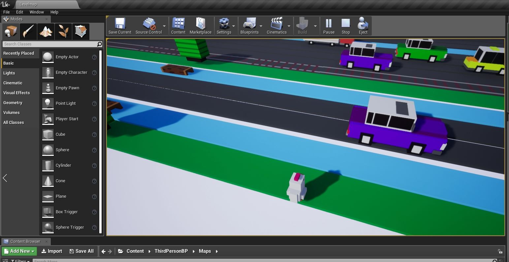
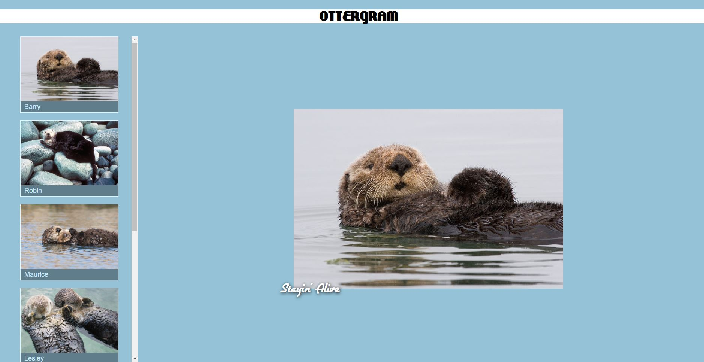
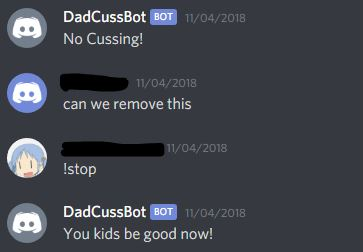

Here you will be able to view a few of the projects I've did as a computer science student, as well as projects that I've done in my free time.
These projects range from compiler designs, game development, mobile development, and front-end development! Feel free to go through my GitHub if you
want to see more of what I'm doing.

This is a recreation of the game "Crossy Road" that I did for my Intro to Game Development Class. It has object spawning, infinite tile spawning
and character movement! Click the button below to see the repository. Feel free to browse around for my other game development projects!

A sample web page created for the purpose of learning HTML and CSS. It contains pictures of otters named after the Bee Gees. This page is created
by following the instructions of Front-End Web Development: The Big Nerd Ranch Guide

A sample web page created for the purpose of learning HTML and CSS. It contains an order and payment form for a coffee store. This page is created
by following the instructions of Front-End Web Development: The Big Nerd Ranch Guide

This is a auto moderator bot for the application Discord. Using the Discord API, I've created a bot that moderates Discord chat rooms.
It can filter out, delete messages that contains cuss words, flip a coin, and roll a dice! You can add this to any Discord server by running the code
and enter the start command.
Front-End Midterm
Chattrbox